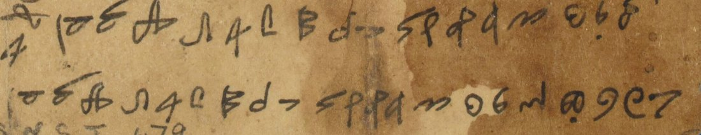
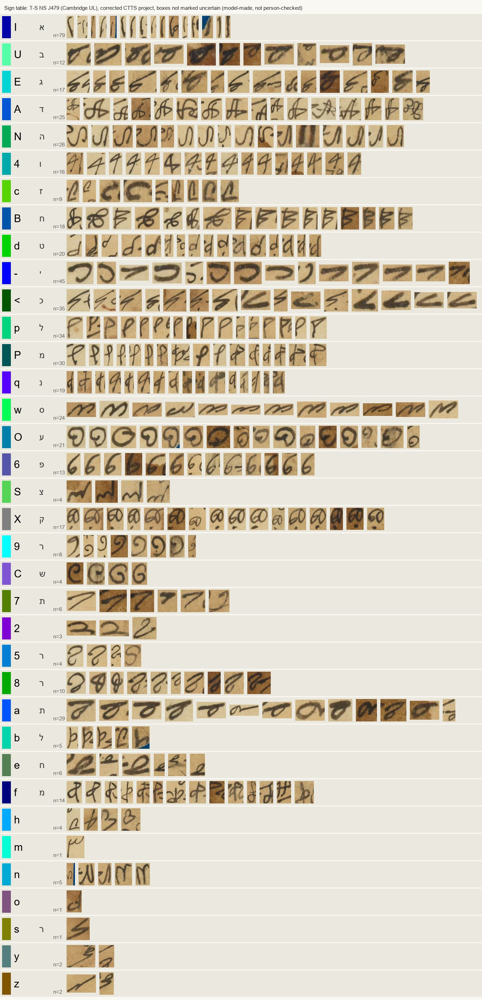
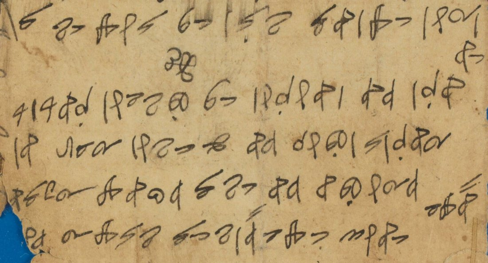
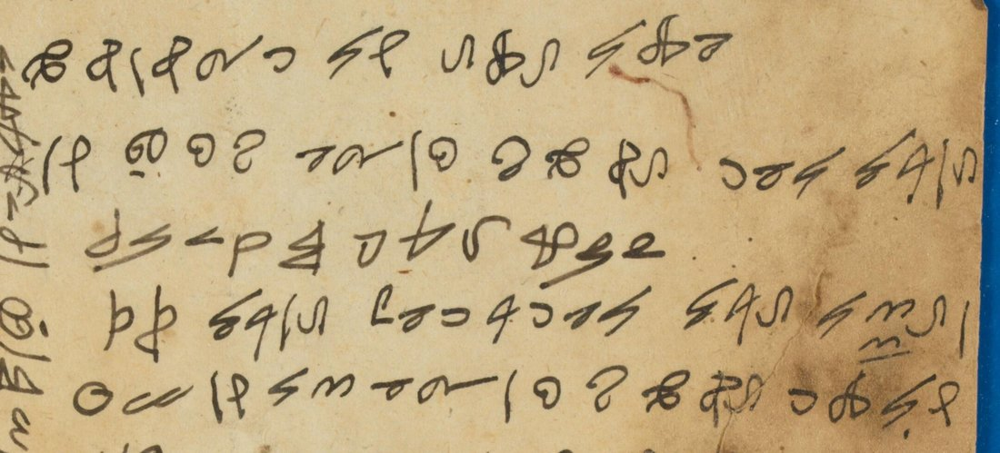

At a glanceCiphertext-only break · partial (74% of cipher tokens valued, not the word count)
- The document
- One paper folio covered on both sides with jottings in many directions, signed "the poor one, Isḥāq the Jew". No year survives; the formulary points to about 1400–1650.
- Where
- Cambridge University Library, Taylor-Schechter New Series J479; Princeton Geniza Project document 8804.
- The cipher
- 22 invented signs for the 22 Hebrew letters, a few letters with variant signs, and dots for the Arabic sounds Hebrew lacks. The language is Judaeo-Arabic.
- How it was deciphered
- The scribe wrote his alphabet out twelve times, unlabelled, several of them partly. Read in Hebrew order, those rows and the commonest short words (פי, יא, מן) fixed the signs; the two Burda verses then came out with only phonetic spellings and two slips.
- What it says
- Burda verses 1–2, "This took place at the end of Jumādā al-Thānī, in the year fo[ur…]", the word "thimble", a line of love poetry, "praise be to God", and an explicit passage about a woman named Raḥma that ends "my dove, all this is lies".
- Credit
- Alan Elbaum (Princeton Geniza Project) identified the cipher, mapped the signs and read parts of it first; his reading is unpublished (blog post of 22 June 2022).
- Still open
- About a quarter of the signs: two lines of side 1, most of one line of side 2 and two short groups there give letters but no Arabic, some look like letter practice, and a few words are lost in holes.
01 The sheet
T-S NS J479 is a single leaf of paper from the Cairo Geniza, now in Cambridge University Library. Both sides are filled with short lines written in every direction: most in an invented script, a few in Arabic letters (the opening of a petition and a line of letter trials). The Princeton Geniza Project describes it as Judaeo-Arabic jottings "in an idiosyncratic (unique?) cipher" and dates it no earlier than the mid-13th century, from the hand, the formulary and the quotation of al-Būṣīrī's Burda (al-Būṣīrī died around 1295).
Alan Elbaum came across it while looking for uncatalogued fragments and described it on the Cambridge Genizah blog in 2022: about 22 symbols written in a row several times, a language that seems to be Judaeo-Arabic, the scribe's name, two Burda verses and some pornography. He mapped the signs to the Hebrew alphabet and published an annotated photocopy, but no transcription or translation.

02 The key
As photographed, the lines run left to right; the page is upside down in the photographs, and turned round they read right to left in the ordinary way (Elbaum's copy shows them so). The alphabet rows, read in Hebrew order, give the value of every sign. Sign frequencies agree: the commonest are the signs for א, י, ל and מ, as in Judaeo-Arabic, and the commonest short words come out as פי ("in"), יא ("O") and מן ("from").
The scribe was not fully consistent. Across his alphabets one sign serves for ת, ש and ב, another for ת and צ, and צ has five forms; ר is written three ways in the alphabets and a fourth in the text. In the text of side 1 the 7-shaped sign stands for ב. A dot under ט marks ض or ظ, under ד marks ذ, and under כ marks خ: the Arabic sounds the Hebrew alphabet lacks. Two rows of side 1 were written with the page turned: S1L03, a fragment of the alphabet from ב to ל, and the text line S1L07. Three items at the top of side 2 are upside down as well.

The boxes were written out as a CTTS project (CrypTool Transcriber and Solver): a blind first pass by two models, compared with the transcription, then every disagreement and missing sign decided on enlarged crops, and a second round after a line-by-line review of the table (step 16 of the notes). The project files are corrected but have not been opened in CTTS, and no person has checked the table, so it is not yet a gold standard.
03 The Burda verses
Four lines of side 2, written from the bottom up, are the first two verses of al-Būṣīrī's Burda, the most famous praise poem to the Prophet. They read under the key with the scribe's own spellings (the tanwīn written as נ, the rhyme vowel written out, no hamza) and a few slips: ג and ז swapped once, ת written ט in טלקא, ب written י in ידי; the opening א is not visible.

| Hebrew letters on the page | Arabic | English |
|---|---|---|
| (א)מן תד̇כר גיראן י?ד̇י סלמי | أمن تذكّر جيرانٍ بذي سلمِ | Is it from remembering neighbours at Dhū Salam |
| מגזת דמען גרי מן מקלתן בדם | مزجت دمعًا جرى من مقلةٍ بدمِ | that you have mixed with blood the tears that flowed from an eye? |
| אם הבת אלריח מן טלקא כאט̣מה | أم هبّت الريح من تلقاء كاظمةٍ | Or has the wind blown from the direction of Kāẓima, |
| ואומט̣ אלברק פי אלט̣למא מן אט̣ם | وأومض البرق في الظلماء من إضمِ | and the lightning flashed in the darkness from Iḍam? |
04 The other texts
The date formula. Above the Burda: גרי דלך פי אכ̇ר גמאדי אלתאמי, then on the next line סנת אר: "This took place at the end of Jumādā al-Thānī, in the year fo[ur…]". The scribe writes אלתאמי for al-thānī. The year breaks off after its first two letters, against an alphabet row on the same line (which was written first is not certain), so no year survives. Because Arabic gives the units first, it ended in 4, or in 40 (740, 840 …).
The signature. "The poor one, Isḥāq the Jew" (אלפקיר אסחאק אליהודי) stands in both margin columns of side 1 and twice more, once as "I, the poor one, Isḥāq the Jew".
Love poetry and a word. Side 2 has יא כ̇י מן אלהגר יא כ̇לי … ("O brother, from separation! O my dear friend …"), another line beginning "from separation", and כסבתאן כסתבאן, "thimble, thimble", the Hebrew-script word the Geniza Project lists, here in the cipher.
The erotic passage. The top of side 1 is a short explicit text in Egyptian colloquial about a woman named Raḥma (her name also stands once on side 2):

| Hebrew letters on the page | Arabic | English |
|---|---|---|
| אל קער בתאע רחמה יבכ גואה | القعر بتاع رحمة يبكّ جوّاه | The backside of Raḥma: he rams inside it. |
| למ גואה זבי ויבכ גוה כסהא | لمّا جوّاه زبّي ويبكّ جوّه كسها | When my cock is inside it, and he rams inside her cunt. |
| ע** אלכס בתאע רחמה ידכל | … الكس بتاع رحمة يدخل | […] the cunt of Raḥma: he goes in. |
| *רק? אלחמד ללאה רב אלעאלמין | … الحمد لله رب العالمين | […] Praise be to God, Lord of the worlds. |
| חמאמתי כל הדה כדב | حمامتي كل هذا كذب | My dove, all this is lies. |
The verb يبكّ is glossed in Lisān al-ʿArab (root بكك) as vigorous intercourse; in S1L04 it is written with the 7-shaped sign that side 1 uses for ב. Raḥma is taken as a name; "her womb" is the alternative in the first line. Elbaum's note that the passage ends "all this is lies" is confirmed.
05 Dating
No year survives (section 04). The Burda gives the floor, about 1290; its earliest dated Egyptian copies are from about 1365. Two features of the formulary point later. The petition opening on side 1, "kisses the ground before the lofty stations, may God exalt them", matches only two Geniza petitions, one from about 1600 and one the Geniza Project dates "late"; the Mamluk chancery manual of al-Qalqashandī and the Mamluk chronicles have "the noble stations" instead. And the month name Jumādā al-Thānī is rare before the 15th century: about a hundred dated Geniza documents and the Arabic papyri up to the 16th century use the classical al-Ākhira, with one exception (Alexandria, 1415, a notary of Maghribi descent). Together these point to about 1400–1650, probably the 15th–16th century. Both late-leaning arguments rest on absence in small samples, and Ottoman court registers were not searched; the hand and the paper have not been examined by a palaeographer.
06 How it was done
Both sides were fetched at full resolution from the Cambridge IIIF server and transcribed sign by sign with labels for the 22 alphabet-row signs plus variants (679 signs in all, alphabet rows included). The alphabet rows gave the order of the signs; the frequent short words gave the direction; the Burda then confirmed the key. Each side was re-read in Hebrew letters by a separate reader who did not open Elbaum's copy, the open rows were re-read with every variant value from a slot-by-slot comparison of the twelve alphabets and in both orientations, Elbaum's annotated copy was opened at the start only to locate lines and used for checking after the key was found (at 1200 px most of its letters cannot be made out); the Geniza Project's content list, which names the Burda verses, was known beforehand. A Judaeo-Arabic stand-in language model (Arabic papyrus editions and the Qur'an written in Hebrew letters) was built for the statistics.
07 What remains open
- S1L07 (written with the page turned): only הדה "this" reads in […]?ל קרשכד הדה אלפרא.
- S1L08 (ט פק ר?תומח לכלכא …, repeated ל pairs) and S2U01 (opens with two forms of the 7-sign): probably letter practice.
- S2L10: only רחמה (Raḥma) reads in א ליליכה ר?חמה כב ס רמה.
- S2L13, a few signs in a smaller, lighter hand: not read.
- The first words of S1L05 and S1L06, the tail of S1L13, and the last word of the love-poetry line (perhaps يا ليت "would that").
- The word after "from separation" in S2L19, the beginning of S1L07 and a few letters in the middle of S1L08, lost in holes in the paper.
- S1L10 (הככה ה המח חכמכ …) is not text: a letter trial of near-palindromes, each letter written in both of its forms.
- The two Arabic-script lines of the petition are transcribed only provisionally.
Uncertain readings: the verb يبكّ (C, confirmed by the parallel lines and the dictionary, but the S1L04 sign is a variant), Raḥma as a name (C), "would that" in S2L17 (I, low confidence).
Full texts
The transcription and the decryption of every document on this page, so that the reading can be used and checked. Short files are shown here; all are in the repository.
T-S NS J479, both sides
A practice sheet of Isḥāq the Jew, probably 15th-16th century Egypt: his invented sign alphabet written out twelve times, his signature, verses 1-2 of al-Būṣīrī's Burda, a legal date formula, the word 'thimble', a line of love poetry, 'praise be to God', and an erotic passage in Egyptian colloquial about a woman named Raḥma ending 'my dove, all this is lies'.
Transcription
# T-S NS J479, side 1: shape transcription
Source: `img/full1.jpg` (3097 x 4366). All coordinates are pixels in full1.jpg. Crops, rotations and
example glyphs are in the session scratch folder `j479_s1` (not kept in the repo). No decipherment was attempted.
## Conventions used
- Labels: the 22 labels of `glyph_chart.png` (I U E A N 4 c B d - < p P q w O 6 S X 9 C 7), plus new labels
e y h z b f o 8 m (see the inventory). `C` (large open C) was not found on side 1.
- Tokens are in reading order: the first token is the rightmost sign once the line is upright (for the vertical
columns, the topmost sign). Signs are separated by spaces, words by ` | `.
- `?` = illegible sign, `X?` = doubtful reading, `X.` = dot (or short dash) clearly under the sign, `[...]` = hole/loss.
- Word division was measured: the horizontal gap between ink blobs in the line band, read alongside the image. Gaps of
about 45 px or more count as word breaks, gaps under about 30 px do not. Gaps of 30-45 px were decided by eye, and
the parallel words between lines were used as a check. Word breaks are the softest part of the transcription.
- The alphabet rows (L09, L15, L16, and L14, which reads right to left) carry no word division in the hand. Their
` | ` marks only unusually wide gaps. The tokens still run rightmost-first. The left-to-right order is in the note.
## Orientation finding
The brief expected the part of the page below y ~2600 to be upside down. On inspection only the **two-line Arabic
petition** (y ~2690-3010) is upside down. Every cipher line below it (y 3080-3770, including the alphabet rows)
is upright, the same way up as the top of the page. The orientation was checked with the 4, A, d, p and the dots
under X. So there are no `S1U..` cipher lines. The petition is given as S1AR02-03. The two left-margin columns read
top to bottom with the letter tops toward the left edge of the leaf: rotate the crop 90 deg clockwise to read them.
## 1. Lines
### Horizontal cipher lines, upright, right to left
| Line | y range | x range | Transcription | Notes |
|---|---|---|---|---|
| S1L01 | 590-770 | 680-2225 | U A < \| N A N \| p < \| - U f I q B | The sign at 1065-1210 is a loop with a long rising tail, read as U. |
| S1L02 | 820-1000 | 720-2755 | N I 4 E < U - \| N q B 9 \| O I U 7 \| 9 O X. \| p I | The gaps of 41-44 px inside "9 O X." and "N q B 9" were not taken as breaks. |
| S1L03 | 1020-1185 | 820-2080 | e y B N h U \| z P < < d | y's tail sweeps down to (1815,1178). N at 1640-1740 has a narrow bowl and a short right leg. |
| S1L04 | 1180-1330 | 870-2740 | I N w < \| N 4 < \| < 7 - 4 - U c \| N I 4 E \| f b | A small interlinear **w** below at x 2500-2600, y 1290-1320 (under the "w <" of word 1), not in the tokens. |
| S1L05 | 1350-1510 | 800-2715 | p <. A - \| N f B 9 \| O I U U w < p I \| < O | The dot of `<.` is at (2595,1500). |
| S1L06 | 1530-1690 | 785-2660 | q - f I? d P? ? O p I \| U 9 \| N I p p \| A f B p I X 7 m | The hole at x 2120-2440 has eaten the lower half of word 1. P? (2263-2340) and ? (2205-2245, a faint oval) are damaged. I? is a long stroke joined to the f. A loose dot at (1827,1686) sits between this line's 9 and the X of S1L07 and is attributed to neither. |
| S1L07 | 1690-1850 | 735-2095 | [...] \| < d? \| X \| 6 9 < N? < \| N B N \| I d 9 6 I | The line runs into the hole at x 2100-2400, and the paper beyond is blank at this height. N? (1410-1485) is the angular two-stroke form. X (1805-1890) has the dot above it, not below. |
| S1L08 | 1800-2040 | 880-2520 | d y \| < I? \| [...] \| I? < b < b e f 4 U 7 7 \| X. E \| d | "d y" is squeezed vertically at the right margin (d above at y 1810-1920, y below at 1940-2000, with a tail to (2390,2040)). Order taken top first. The hole runs x 2120-2240. Word 4 has 11 signs with no measurable gap. |
| S1L09 | 2030-2200 | 840-2635 | O w q P \| p <. - d B \| c 4 N \| A E U 7 \| d | **Alphabet, written left to right**: d \| 7 U E A \| N 4 c \| B d - <. p \| P q w O (the chart order U..O, with 7 in the I slot). A dot at (1676,2190) is not attributed. |
| S1L10 | 2240-2410 | 290-2200 | < I O I < e < P \| - w I \| < P < B? \| e f N \| N \| N < < N | The three N at the left are the angular two-stroke form (see variant_N_angular). A thin arc at x ~2240 is a crack, not ink. A dot sits left of the e at (930,2320). |
| S1L11 | 2380-2560 | 1300-2725 | U? N? o q N - p I \| X. I B \| w I \| 9 - X. 6. p I \| I q | U? N? o are three small signs crammed into the right margin (x 2650-2725, y 2385-2485). A "-" (or 7) stands alone under the line end (2640-2710, 2530-2560) and is listed in S1L12. |
| S1L12 | 2420-2700 | 480-2710 | - \| w \| w? \| ? \| X. \| X. \| X | Scattered single signs and pen trials between S1L11 and the petition, rightmost first: "-" (2640-2710, y 2530-2560); w (1730-1905, y 2590-2645); w? faint (1350-1490, y 2545-2600); ? = a knot of about six interlaced loops (1080-1220, y 2520-2690); X. (950-1020, y 2420-2520); X. (670-760, y 2560-2680); X (480-560, y 2570-2640). |
| S1L13 | 3080-3250 | 390-2675 | 4 7 I \| w \| 8 \| A? \| h \| X. I B \| w I \| E? - X. 6. p I \| 6 | The last 6 is raised and stands alone (390-435, y 3040-3130). A? is a triangle with a vertical stem through its apex. E? has the E shape, but the same word in S1L11 and the columns has 9 in that slot. |
| S1L14 | 3260-3420 | 290-2630 | 8 \| I 7 E A N 4 c B d - < p f q w O 6 U X 9 7 U \| O w | **Alphabet, right to left**, close to the chart order: I 7 E A N 4 c B d - < p f q w O 6 U X 9 7 U. The 8 stands apart at the right margin (2575-2630). "O w" at the left (290-580, y 3250-3340) is raised. |
| S1L15 | 3470-3650 | 570-2680 | d b P P p <. < B c 4 N A E U I -? N? c? < f I | **Alphabet, left to right**: I f < c? N? -? I U E A N 4 c B < <. p P P b d. The left part (570-1135) is on a stain, and its small signs c? N? -? are doubtful. |
| S1L16 | 3620-3770 | 880-2065 | d. f P \| P \| P O q P I \| q q \| P S 4 | **Alphabet row 2, left to right**: 4 S P \| q q \| I P q O P \| P \| P f d. The dot of `d.` is at (2033,3745). A dot above the first q (1250,3618) is not attributed. |
### Vertical columns along the left edge, read top to bottom (rotate 90 deg clockwise)
| Line | x range | y range | Transcription | Notes |
|---|---|---|---|---|
| S1V01 | 385-550 | 237-1960 | ? \| - A 4 N - \| P \| p I \| X. I B \| w I \| 9 - X. 6. p I | Head sign `?` (y 237-397): a large double-loop with long tails. Read the page's way up it looks like two Arabic-script strokes (lām-alif-like). Not identified. |
| S1V02 | 590-745 | 246-1995 | ? \| ? \| - A 4 A? - p I \| X. I B \| w I \| 9 - X? 6? p I | Head `?` (y 246-387) looks like a lām-alif (لا) when read the page's way up. Second `?` (y 429-537): an S- or 5-shaped curve with a top bar, not identified. A? (y 880-1000) is an A crossed by an extra diagonal stroke (a correction?), in the place where V01 has N. "X? 6?" (y 1758-1888) are drawn as one encircled ligature with a line under it. |
The two columns are near copies of each other and of the left halves of S1L11 and S1L13. The repeated sequence
"X. I B | w I | 9 - X. 6. p I" stands four times on this side.
### Upside-down part
There are no upside-down cipher lines (see "Orientation finding"). The upside-down petition is S1AR02-03 below.
## 2. Arabic-script lines (transcribed in Arabic script, not labels)
| Line | Position | Direction | Text |
|---|---|---|---|
| S1AR01 | y 330-560, x 560-2700 (top line) | upright, right to left | كا للطم ياعاس لا طططم لا |
| S1AR02 | y ~2880-3010, x ~700-2760 | **upside down** (first line of the petition when turned) | يقبل الارض و[...]ى المواقف العاليه اعلاها الله تعا وشرّف[ها] |
| S1AR03 | y ~2690-2880, x ~700-2760 | **upside down** (second line of the petition) | ىلاه محمد [...]ـه امىں ويسير انه مقطوع الحاكـ[م] |
- S1AR01 is Arabic script, but the reading is a letter-shape transliteration only: the first sign looks like a kāf
drawn like the cipher "<", then three isolated ṭā'-like letters and final forms with descending tails. It may be pen trials or
a magical formula. The column heads above S1V01/S1V02 (y 237-397) may belong with it.
- S1AR02 is the standard petition opening ("kisses the ground and reports to the lofty stations, may God exalt
them"). The hole at x ~1100-1300 takes out part of "وينهى الى". The last word looks like وشرق with a letter
written above it, read here as وشرّف[ها]. Not checked letter by letter.
- S1AR03: the hole at x ~1100-1300 takes the middle. ىلاه (بلاده/تلاه?) and امىں / ويسير are uncertain. محمد,
مقطوع and الحاكم are clear. Undotted letters are written as they stand (ى ں).
- The modern pencil shelfmark "T-S NSJ 479" at the top (x 1630-2180) is not transcribed.
## 3. Label inventory (side 1)
Counted over the machine block: **328 sign tokens** in 18 cipher rows (S1L01-16, S1V01-02). 5 are illegible `?`;
`[...]` is not counted. "dot" = how many of the count carry a dot or dash under them; "doubt" = how many are marked `?`.
| Label | Count | dot | doubt | Shape on side 1 |
|---|---|---|---|---|
| I | 40 | 0 | 3 | Tall vertical or slightly curved stroke. |
| < | 29 | 3 | 0 | An angle opening to the right, usually with a long upper stroke rising to the upper right and a tail sweeping down-left below the line. Short forms without the tail are included (e.g. S1L10). |
| N | 24 | 0 | 3 | Arch: a small bowl at the bottom left rising into an arch, right leg down. Includes the plain ∩ form and an angular two-stroke "Λ" form (S1L07, S1L10, S1L11; variant_N_angular.png). |
| - | 20 | 0 | 1 | A blob at the left, a short bar to the right, a hook down and back to the left. Short ⁊ form and rounder ↄ form, which cannot be reliably separated. |
| p | 18 | 0 | 0 | Narrow loop at the top right of a stem, usually with a short lead-in stroke crossing the stem from the left. |
| X | 16 | 11 | 1 | Two loops side by side (ꝏ), usually with a dot or short dash under them. |
| U | 15 | 0 | 1 | A loop hanging under a bar or a stroke that rises to the right. Includes the long-tailed "loop + long rising tail" form (variant_U_longtail.png). |
| B | 14 | 0 | 1 | Either the print form (stem, top bar crossing it, bowl and triangle on the right) or the cursive form: a lead-in bar crossing a short slanted stem, an upper-right loop and a lower bowl, like a lying 8 (variant_B_cursive.png). The cursive form stands in the B slot of the S1L09 alphabet, which is why both forms get this label. |
| P | 13 | 0 | 1 | Stem with a large, flat or triangular loop at its top right, and no lower-left loop. |
| w | 13 | 0 | 1 | Wave with two humps, rising to the right. |
| 4 | 12 | 0 | 0 | The figure 4: diagonal, crossbar, stem going down. |
| A | 11 | 0 | 2 | Loop at the bottom left, tall stem, triangle to the right, often with a top stroke. |
| d | 11 | 1 | 1 | Loop at the bottom left, tall stem rising on the right, little or no descender. |
| q | 10 | 0 | 0 | Loop at the left middle, stem on the right going well below the line, sometimes with a small bar at the top. |
| 9 | 10 | 0 | 0 | The figure 9: closed loop on top with the tail down-left (S1L07), and a cursive form with a blob at the upper left, an arch over to the right, a diagonal down to the lower left and a small return loop (variant_9_cursive.png). The cursive form stands in the 9 slot of the S1L14 alphabet. It may also overlap with E (S1L13, E?). |
| O | 10 | 0 | 0 | Closed round with an inner hook or stroke (ʘ, Θ). |
| 7 | 9 | 0 | 0 | Blob or curl at the left, bar to the right, long diagonal down-left reaching below the line. |
| 6 | 8 | 3 | 1 | The figure 6: top stroke rising to the right, round bowl at the bottom, often with an inward hook. |
| E | 7 | 0 | 1 | Long top stroke rising to the upper right, with a loop or bowl at the bottom left (б / ઠ). There is no tail below the line, which is what separates it from `<`. |
| c | 5 | 0 | 1 | Small "C" open to the right, with a knob at the top (ᑕ). |
| S | 1 | 0 | 0 | Wave followed by a tall stroke at its right end (S1L16 only). |
| C | 0 | - | - | Not found on side 1. |
| **e** (new) | 4 | 0 | 0 | A reclining "e": a loop sitting on a horizontal base stroke that runs out to the right (ɐ lying). newglyph_e.png (S1L03, 1985-2075). |
| **b** (new) | 4 | 0 | 0 | Thorn: a loop on the right of a stem that rises clearly above the loop (þ). newglyph_b.png (S1L04, 870-930). Also the last P in the S1L15 alphabet, which has a small cross-bar at the top. |
| **f** (new) | 10 | 0 | 0 | Stem with a loop at the upper right whose stroke crosses the stem and closes a second small loop or curl at the lower left (ꝕ / ϕ). newglyph_f.png (S1L04, 930-1020). It stands in the P slot of the S1L14 alphabet (…< p f q w…). |
| **y** (new) | 2 | 0 | 0 | An e-like loop on a base, with a long tail sweeping down-left below the line. newglyph_y.png (S1L03, 1885-1965). |
| **h** (new) | 2 | 0 | 0 | A triangle (crossbar + diagonal) at the bottom, with a stem rising above it (like an inverted 4). newglyph_h.png (S1L03, 1500-1625). |
| **8** (new) | 2 | 0 | 0 | An upright figure 8: a closed top loop with a horizontal stroke through it, and a stem or narrow loop below. newglyph_8.png (S1L13, 1950-2015). Lower part of the page only. |
| **z** (new) | 1 | 0 | 0 | A tall stem with a Z-shaped stroke on its left (top bar, diagonal, base bar), like ∃ with a stem. newglyph_z.png (S1L03, 1245-1340). |
| **m** (new) | 1 | 0 | 0 | A wave like w ending at its LEFT end in a tall stroke descending below the line (mirror image of S). newglyph_m.png (S1L06, 785-860). |
| **o** (new) | 1 | 0 | 0 | A small closed loop, about half the height of the other signs. newglyph_o.png (S1L11 right margin, 2652-2680). |
| ? | 5 | | | Illegible: the V01/V02 head signs (3), V02's second sign, the loop-knot in S1L12, and the damaged oval in S1L06. |
Labels considered and folded into others (scratch names not used in the output): "a" (loop + long rising tail)
was folded into U; "j" (round ↄ) into -; "n" (angular two-stroke arch) into N; "2" (cursive 9) into 9; the
cursive lying-8 into B. Each fold rests on the alphabet rows (S1L09, S1L14) or on parallel words. Anyone who wants
the finer split can recover it from the notes and the variant_*.png crops.
## Machine block
```
S1L01: U A < | N A N | p < | - U f I q B
S1L02: N I 4 E < U - | N q B 9 | O I U 7 | 9 O X. | p I
S1L03: e y B N h U | z P < < d
S1L04: I N w < | N 4 < | < 7 - 4 - U c | N I 4 E | f b
S1L05: p <. A - | N f B 9 | O I U U w < p I | < O
S1L06: q - f I? d P? ? O p I | U 9 | N I p p | A f B p I X 7 m
S1L07: [...] | < d? | X | 6 9 < N? < | N B N | I d 9 6 I
S1L08: d y | < I? | [...] | I? < b < b e f 4 U 7 7 | X. E | d
S1L09: O w q P | p <. - d B | c 4 N | A E U 7 | d
S1L10: < I O I < e < P | - w I | < P < B? | e f N | N | N < < N
S1L11: U? N? o q N - p I | X. I B | w I | 9 - X. 6. p I | I q
S1L12: - | w | w? | ? | X. | X. | X
S1L13: 4 7 I | w | 8 | A? | h | X. I B | w I | E? - X. 6. p I | 6
S1L14: 8 | I 7 E A N 4 c B d - < p f q w O 6 U X 9 7 U | O w
S1L15: d b P P p <. < B c 4 N A E U I -? N? c? < f I
S1L16: d. f P | P | P O q P I | q q | P S 4
S1V01: ? | - A 4 N - | P | p I | X. I B | w I | 9 - X. 6. p I
S1V02: ? | ? | - A 4 A? - p I | X. I B | w I | 9 - X? 6? p I
S1AR01: كا للطم ياعاس لا طططم لا
S1AR02: يقبل الارض و[...]ى المواقف العاليه اعلاها الله تعا وشرّف[ها]
S1AR03: ىلاه محمد [...]ـه امىں ويسير انه مقطوع الحاكـ[م]
```Transcription: tr_side2.md
Decryption: tr_hebrew_side1.md
Decryption
# T-S NS J479, side 2: reading in Hebrew letters under the key
Independent re-reading of side 2 (img/full2.jpg) sign by sign, LEFT TO RIGHT in the photographed orientation, under
the established key (I א, U ב, E ג, A ד, N ה, 4 ו, c ז, B ח, d ט, - י, < כ, p ל, P מ, q נ, w ס, O ע, 6 פ, S צ,
X ק, 9 ר, C ש, 7 ת; variants a = ת/ة, s = ר, upright 8 = ר, e = ח, ↄ = י). Elbaum's annotated copy and the
ann_* crops were not opened. Enlargements are in the session scratchpad folder `j479_read2` (crop.py, L??*.png).
Conventions: Hebrew letters in writing order (shown here in normal Hebrew right-to-left display); `?` after a
doubtful letter, `*` an illegible or lost sign; `ט̣`, `ד̇`, `כ̇` = the sign carries a dot (see the general notes).
## General observations
1. **Dots are diacritics, used as in Geniza Judaeo-Arabic.** A dot under `d` (ט) marks ض/ظ (ואומט̣, אלט̣למא,
כאט̣מה, אט̣ם); a dot under `A` (ד) marks ذ (תד̇כר, בד̇י in S2L09); a dot under or beside `<` (כ) marks خ (אכ̇ר in
S2L02, יא כ̇י and יא כ̇לי in S2L17). `X` (ק) always has its dot. This explains most of the "dotted" signs that
tr_side2.md lists as unexplained (`<.`, `-.`, `d.`).
2. **P = מ is the loop-on-stem with a large lower-left loop crossing the stem** (the left "curl" of the chart).
With that test the frequent P in S2L05-07 and S2L19 is מ throughout; tr_side2.md's `8` in S2L19 and `q` in
S2L03 are this sign.
3. **d/q.** Most of tr_side2.md's word-final `d` after P in "מן" (S2L05, S2L06) are q: the stem rises above the loop
and goes a little below the baseline. Read נ. A real `d` (ט) for ת stands in S2L06 טלקא.
4. **Crossed d/q (tr's `t`) = final ן.** It ends אמן in S2L09 and stands for the tanwīn in דמען (S2L07).
5. **`//` (tr's `y`)**: two short parallel slanting strokes above a word, above the נ of גיראן (S2L09, jīrānin) and
above the marginal בדם (S2L08). Possibly a tanwīn/kasra mark imitating Arabic; or an insertion mark for the
marginal word. Not a letter.
6. Phonetic spelling of the Burda: the scribe writes the tanwīn as נ (דמען, מקלתן) and the rhyme vowel as י
(סלמי). Hamza is never written (טלקא, אלטלמא).
## S2L01 (upright as photographed; probably belongs to upside-down S2U03)
- Signs LTR (upright): `-.` `q` `a` (long lead-in to the dash, dot under it).
- Hebrew: י? נ? ת?
- Arabic: not read.
- English: none.
- Notes: Rotated 180 degrees these three signs continue the upside-down alphabet line S2U03 (which runs ...ס ע פ צ ק
ר ש then extra forms) as a round loop, a p-like sign and a dotted w; in that orientation they look like
variant end-of-alphabet forms (the `a` = ת variant). I take it as part of the alphabet/pen-trial line, not a
word. Agrees with tr's signs.
## S2L02 + S2L03 (legal/date phrase; S2L03 is the marginal end of S2L02)
- Signs LTR: `\` (stroke, line-start mark) | `E 8 -` | `A p <` | `6 -` | `I <. s` | `E P I A -` `I p. a I` || margin
S2L03: `P -`
- Hebrew: גרי דלך פי אכ̇ר גמאדי אלתא | מ?י
- Arabic: جرى ذلك في آخر جمادى الثا[ني]
- English: "This took place at the end of Jumādā al-Thānī (al-Ākhira)."
- Notes: tr_side2.md departures: tr `s` for the ר of גרי is an upright 8; tr `8 E` = ר י misordered as one word
with ג (E is separated from 8 by a space, but all three belong to גרי); the dot below `<` in אכר is a خ-dot.
The margin sign tr read `q` (S2L03) is clearly P = מ (upper-right loop plus large lower-left loop), so the page
has **אלתאמי**; the sense requires אלתאני, so this is a P-for-q slip by the scribe (or a q-form I do not know).
ذ in דלך is written plain ד (no dot visible).
## S2L04 (interlinear, above the ק of אלברק in S2L05)
- Signs LTR: an `s`-type ר (top stroke, then down-left into a small loop), joined by a horizontal stroke to an
upright 8-shape.
- Hebrew: ר? ר?
- Arabic: not read.
- English: none.
- Notes: tr reads `8 N` RTL. The pair is ligatured like a monogram. Not a word I can read; possibly a correction or
pen trial above אלברק.
## S2L05 (Burda 2b)
- Signs LTR: `4 I 4 P d.` | `I p U 8 X.` | `6 -` | `I p d. p P I` | `P q` | `I d. P`
- Hebrew: ואומט̣ אלברק פי אלט̣למא מן אט̣ם
- Arabic: وأومض البرق في الظلماء من إضم
- English: "or has the lightning flashed in the darkness from Iḍam?"
- Standard: وأومض البرق في الظلماء من إضم. Page differences: ض written ט with a dot (ואומט̣, אט̣ם); ظ written ט
with a dot (אלט̣למא); final hamza of الظلماء not written; إ of إضم as plain א. No letter is wrong.
- Notes: tr `s s` in אלברק = U (ב) + 8 (ר); tr's `d` after P in מן is q (stem passes the baseline).
## S2L06 (Burda 2a)
- Signs LTR: `I P` | `N U a` | `I p s - e` | `P q` | `d p X. I` | `< I d. P a`
- Hebrew: אם הבת אלריח מן טלקא כאט̣מה
- Arabic: أم هبّت الريح من تلقاء كاظمة
- English: "Or has the wind blown from the direction of Kāẓima,"
- Standard: أم هبت الريح من تلقاء كاظمة. Page differences: **ת of تلقاء written with `d` (ט)**, a clear `d` with no
dot; hamza not written (טלקא); ظ written ט with a dot; ة written with the `a` sign.
- Notes: tr `P` in אלריח is p (no lower-left loop); tr `d` in מן is q.
## S2L07 + S2L08 (Burda 1b; S2L08 is the marginal end)
- Signs LTR: `P E c a` | `A P O t` | `E 8 -` | `P q` | `P X. p a q` || margin S2L08: `U A P` with `//` above.
- Hebrew: מגזת דמען גרי מן מקלתן | בדם
- Arabic: مزجت دمعًا جرى من مقلةٍ بدمِ
- English: "you have mixed with blood the tears that flowed from an eye."
- Standard: مزجت دمعا جرى من مقلة بدم. Page differences: **ג and ז transposed (מגזת for מזגת)**; **דמען: final א
replaced by crossed q = ן**, i.e. the tanwīn written out (dam‘an); **מקלתן: ة as `a` (ת) followed by q = נ**,
again the tanwīn (muqlatin); בדם carried into the right margin.
- Notes: tr's word division `q O P A a c E P` (one word) is two words. tr's last `d` is q. The second sign of
word 1 is an E (long top stroke, loop below its left end), the third a c, so the transposition is on the page,
not in my reading.
## S2L09 (Burda 1a)
- Signs LTR: `P t` | `a A. < 8` | `E - 8 I q` (with `//` above q) | `- A -.` | `w p P -`
- Hebrew: (א lost?) מ?ן תד̇כר גיראן י?ד̇י סלמי
- Arabic: أمِن تذكّرِ جيرانٍ بذي سلمِ
- English: "Is it from remembering neighbours at Dhū Salam"
- Standard: أمن تذكر جيران بذي سلم. Page differences: the א of أمن is not visible (the word begins at the edge of
the large hole; a sign may be lost); מן ends in the crossed q (ן); ذ of تذكر written ד with a dot under; **ب of
بذي written as `-` (י)**: a hooked dash with no hanging loop, so the page has ידי; the dot standing after the ד
is the ذ dot; **סלמי: a `-` (י) after the final מ**, writing the rhyme vowel -i.
- Notes: tr `s` in תדכר and גיראן are upright 8s (ר); tr `y` = the `//` mark.
## S2L10
- Signs LTR: `I?` (stroke at hole edge) | `p - p - < N?` | `9?/p? 8 P N` | `< U` | `w` | `s P N`
- Hebrew: א? | ליליכה? | *רמה | כב | ס | רמה
- Arabic: not read. (Possibly ليلى "Laylā" in the first group; كبس "pressed" if כב and ס are one word; حرمه "his
woman" if the smeared sign is ח. None of this yields a sentence.)
- English: not translated.
- Notes: the first sign of the second group is smeared by the brown ink runs (x 1520-1570): a loop on a slanting
stem, could be ל, ר or ח. The last sign of groups 2 and 3 is an arch with a tall right leg; read N (ה) but it is
close to `a` (ת/ة). The N at the end of group 1 runs into the smear. Agrees with tr's signs except `8` for tr's
9? and word count.
## S2L11, S2L12, S2L14, S2L16 (isolated signs between S2L10 and S2L17)
- S2L11 `2 2`, S2L12 spiral `g`: not key signs; not read (doodles or marks).
- S2L14: a `4` with a bar and a dot above: ו? (isolated; not read as a word).
- S2L16: loop on a stem, the loop curling inward to a dot: ל? (isolated, under the first כסבתאן; not read).
## S2L13 (small, lighter hand)
- Signs LTR: `c a d c 4 I` (long arc rising from the d over the signs to its right; tick above the I).
- Hebrew: ז? ת? ט ז? ו? א
- Arabic: not read.
- English: none.
- Notes: as cipher it gives no word. Read right to left as Arabic script it could be alif + ... + a kāf with a long
top stroke (the arc), but I cannot get a word either way. Left open.
## S2L15
- Signs LTR: `z` (long diagonal with a spur) | `< w U a I? q` | `< w a U I q`
- Hebrew: * | כסבתא?ן | כסתבאן
- Arabic: كستبان (twice; the first time with ب and ت transposed)
- English: "thimble, thimble" (kustubān, thimble, from Persian).
- Notes: tr read the fifth sign of word 1 as N?; it is a tall stroke descending below the line, joined by the
tail of the `a`: I (א), making word 1 the same word as word 2 with ב and ת swapped, a slip corrected in the
second writing. The `z` is not a key sign.
## S2L17 + S2L18
- Signs LTR: `- I` | `<. -` | `P q` | `I p N E 8` | `- I` | `<. p -` (S2L18 `w` underlined, written under the `<.`) |
`- p - a U I s U`
- Hebrew: יא כ̇י מן אלהגר יא כ̇לי [ס] יליתבארב
- Arabic: يا خيّ من الهجر يا خِلّي ...
- English: "O brother, (I suffer) from separation! O my dear friend, ..." (last word not understood).
- Notes: the dot right of `<` both times is the خ dot (يا خي colloquial for يا أخي; خلّي "my intimate friend").
The underlined small `w` (ס) under כ̇לי (S2L18) is an interlinear addition whose purpose I cannot fix (a
correction to כסלי would not make sense). The p in אלהגר has a short bar crossing the stem on the left; read
ל for sense (P would give אמהגר). Last group: י ל י ת ב א ר ב, not understood; if the first י is a reduced
יא it might begin يا ليت ("would that ..."), but the rest (בארב) does not read. tr's word `I p N E s` = אלהגר
agrees (s = ר); tr `q` borderline is q (נ).
## S2L19
- Signs LTR: `P q` | `I p N < 5` | `P 6` [hole] `*` (hooked stroke at the right edge of the hole)
- Hebrew: מן | אלהכ?ר? | מ?פ* | *
- Arabic: من الهجر؟ ...
- English: "from separation (?) ..." (rest lost in the hole).
- Notes: group 2 reads literally אלהכר; the fourth sign is an angle with a long rising stroke (כ form, not the
chart's ג), and the large S-shaped `5` stands where ר is needed. Read as a second אלהגר (cf. S2L17) with
doubt. tr's `8` (first sign of group 3) is the P with lower-left loop = מ. Two flecks above the p are not
counted.
## S2L20-S2L23, S2U02, S2U03, S2V01, S2V02 (alphabet rows: confirmed)
- S2L20: א ב ג ד ה ו ז ח ט י כ ל מ נ ס ע פ, then a small loop in the צ slot, ק ר(8) ת and an extra `a` (ת form).
- S2L21: the same tail again (צ? ק ר ת + `a`).
- S2L22: א to פ, with an extra short dash after י and a 6-like sign with a long top in the צ slot.
- S2L23: the chart row א-ת.
- S2U02 (rotated): א ב ג ד twice, then ה ו ז ח ט י כ ל מ נ ס ע פ צ ק ר ש (no ת).
- S2U03 (rotated): צ | ס ע פ צ ק ר ש + extra forms (n, 2, I), continued by S2L01 rotated.
- S2V01, S2V02: alphabet lists down the margin (as tr_side2.md), not re-read sign by sign.
## S2U01 (short note at top right, upside down; read rotated 180 degrees)
- Signs LTR (rotated): `-`/`7` `7` `P` `ↄ` `U` `O` `9`
- Hebrew: י?ת מי?בע?ר
- Arabic: not read.
- English: none.
- Notes: tr took the first two as `7 7`; the first is a short heavy hooked dash, nearer `-` (י) than 7. tr's `-?`
(open round hooked back to the left) is the round ↄ = י. The sixth sign is a round with an inner curl (O),
close to the 9 that follows. No word found; may be a pen trial like the alphabet lines it stands with.
## Summary
```
S2L01 | י? נ? ת? | — | (not a word; probably end of upside-down alphabet line S2U03)
S2L02+L03 | גרי דלך פי אכ̇ר גמאדי אלתא|מ?י | جرى ذلك في آخر جمادى الثاني | This took place at the end of Jumādā al-Thānī
S2L04 | ר? ר? | — | (not read; interlinear pair above אלברק)
S2L05 | ואומט̣ אלברק פי אלט̣למא מן אט̣ם | وأومض البرق في الظلماء من إضم | or has the lightning flashed in the darkness from Iḍam?
S2L06 | אם הבת אלריח מן טלקא כאט̣מה | أم هبت الريح من تلقاء كاظمة | Or has the wind blown from the direction of Kāẓima,
S2L07+L08 | מגזת דמען גרי מן מקלתן | בדם | مزجت دمعًا جرى من مقلةٍ بدمِ | you have mixed with blood the tears that flowed from an eye
S2L09 | (א?)מ?ן תד̇כר גיראן י?ד̇י סלמי | أمن تذكر جيران بذي سلم | Is it from remembering neighbours at Dhū Salam
S2L10 | א? ליליכה? *רמה כב ס רמה | — | (not understood)
S2L11/12 | (signs 2 2, g; not key letters) | — | —
S2L13 | ז? ת? ט ז? ו? א | — | (not understood)
S2L14 | ו? | — | (isolated sign)
S2L15 | * כסבתא?ן כסתבאן | كستبان كستبان | thimble, thimble (first written with ب/ت swapped)
S2L16 | ל? | — | (isolated sign)
S2L17+L18 | יא כ̇י מן אלהגר יא כ̇לי [ס] יליתבארב | يا خي من الهجر يا خلي ... | O brother, from separation! O my dear friend, ... (last word not understood)
S2L19 | מן אלהכ?ר? מ?פ* * | من الهجر؟ ... | from separation (?) ... (rest lost in the hole)
S2U01 | י?ת מי?בע?ר | — | (not understood)
```
Counts (cipher lines that are not alphabet rows):
- Letters read: 191 (S2L01 3, L02 20, L03 2, L04 2, L05 23, L06 21, L07 18, L08 3, L09 18, L10 17, L13 6, L14 1,
L15 13, L16 1, L17 24, L18 1, L19 11, U01 7). Non-key signs (S2L11 `2 2`, S2L12 `g`, the `//` marks, the
line-start stroke of S2L02) are not counted.
- Letters marked ? or *: 30.
- Words not understood: 15 (S2L01 1, L04 1, L10 5, L13 1, L14 1, L16 1, L17 1, L18 1, L19 2, U01 1).
Departures from the standard Burda text (verses 1-2) on the page: (1a) א of أمن not visible, ב of بذي written
י, י added after סלם; (1b) ג/ז transposed in مزجت, tanwīn written נ in دمعا (crossed ן replacing א) and in
مقلة (מקלתן); (2a) ת of تلقاء written ט; (2b) none beyond the regular ט̣ for ض/ظ and the dropped hamza.
Hardest places:
1. S2L10 entire line: letters mostly clear but no sense; one sign smeared by ink runs.
2. S2L17 last group יליתבארב.
3. S2L13 small hand: neither cipher nor Arabic script gives a word.
4. S2L19 group 2 (כ and an S-shaped sign where אלהגר needs ג and ר) and the loss in the hole after מפ.
5. S2L03 margin: the sign is P (מ) where אלתאני needs נ; and S2U01, the upside-down note, unread.Reading
# T-S NS J479: final reading (20 Nov 2026)
Cambridge University Library, T-S NS J479 (Princeton Geniza Project 8804). One paper folio, both sides, written by a
scribe who signs himself Isḥāq the Jew. Judaeo-Arabic (Arabic in Hebrew letters) in an invented sign alphabet.
Row labels as in `tr_side1.md` / `tr_side2.md`; the sign-by-sign readings are in `tr_hebrew_side1.md`,
`tr_hebrew_side2.md`, `tr_hard_rows.md`, `tr_year.md` and `tr_turned_rows.md`. Hebrew letters are given as on the
page (with the scribe's own spellings); `?` doubtful, `*` illegible, `[...]` lost.
## Key
Signs as photographed (`glyph_chart.png`; the page is photographed upside down, so the lines run left to right):
I א, U ב, E ג, A ד, N ה, 4 ו, c ז, B ח, d ט, - י, < כ, p ל, P/f מ, q נ, w ס, O ע, 6 פ, S צ, X ק, 9 ר, C ש, 7 ת.
Variants: loop with rising tail = ת (also for ة); lying ꝛ, upright 8 and 5-shape = ר; reclining e and cursive B = ח;
round ↄ = י; thorn þ = ל; crossed d/q = final ן; on side 1 the 7-sign = ב. A dot under ט marks ض/ظ, under ד ذ,
under כ خ. The alphabet is written out twelve times, several partly (S1L03 ב-ל, S1L09, S1L14, S1L15, S2L20-23,
S2U02-03, S2V01-02); S1L16 is letter practice.
## Side 2
**The Burda, verses 1-2** (al-Būṣīrī, Qaṣīdat al-Burda), written in four lines from the bottom up:
| Row | Hebrew letters | Arabic | English |
|---|---|---|---|
| S2L09 | (א)מן תד̇כר גיראן י?ד̇י סלמי | أمن تذكّر جيرانٍ بذي سلمِ | Is it from remembering neighbours at Dhū Salam |
| S2L07-08 | מגזת דמען גרי מן מקלתן בדם | مزجت دمعًا جرى من مقلةٍ بدمِ | that you have mixed with blood the tears that flowed from an eye? |
| S2L06 | אם הבת אלריח מן טלקא כאט̣מה | أم هبّت الريح من تلقاء كاظمةٍ | Or has the wind blown from the direction of Kāẓima, |
| S2L05 | ואומט̣ אלברק פי אלט̣למא מן אט̣ם | وأومض البرق في الظلماء من إضمِ | and the lightning flashed in the darkness from Iḍam? |
The scribe writes the tanwīn as נ (דמען, מקלתן), the rhyme vowel as י (סלמי), swaps ג and ז in מגזת, writes ת as ט
in טלקא and ب as י in ידי, and never writes the hamza.
**The date formula:**
| Row | Hebrew letters | Arabic | English |
|---|---|---|---|
| S2L02-03, S2L01, S2U03 (end) | גרי דלך פי אכ̇ר גמאדי אלתאמי / סנת אר | جرى ذلك في آخر جمادى الثاني سنة أر[بع ...] | This took place at the end of Jumādā al-Thānī, in the year fo[ur ...] |
The scribe writes אלתאמי for الثاني. The year breaks off after אר, against an alphabet row already on the line.
**Other lines:**
| Row | Hebrew letters | Arabic | English |
|---|---|---|---|
| S2L15 | כסבתאן כסתבאן | كستبان كستبان | thimble, thimble (the first with ב and ת swapped) |
| S2L17-18 | יא כ̇י מן אלהגר יא כ̇לי [ס] יליתבארב | يا خيّ من الهجر يا خلّي ... | O brother, from separation! O my dear friend, ... (last word not read; perhaps يا ليت "would that") |
| S2L19 | מן אלהכ?ר? [...] | من الهجر ... | from separation ... (the rest is lost in a hole) |
| S2L10 | א ליליכה ר?חמה כב ס רמה | ... رحمة ... | ... Raḥma ... (the rest not read) |
| S2L13, S2U01, S2L01-04 (single signs) | ז ת ט ז ו א; י 7 מ י ב ע ר | — | not read; S2U01 probably a pen trial |
## Side 1
| Row | Hebrew letters | Arabic | English |
|---|---|---|---|
| S1L02 | אל קער בתאע רחמה יבכ גואה | القعر بتاع رحمة يبكّ جوّاه | The backside of Raḥma: he rams inside it. |
| S1L04 | למ גואה זבי ויבכ גוה כסהא | لمّا جوّاه زبّي ويبكّ جوّه كسها | When my cock is inside it, and he rams inside her cunt. |
| S1L05 | ע** אלכס בתאע רחמה ידכל | ... الكس بتاع رحمة يدخل | [...] the cunt of Raḥma: he goes in. |
| S1L06 | *רק? אלחמד ללאה רב אלעאלמין | ... الحمد لله رب العالمين | [...] Praise be to God, Lord of the worlds. |
| S1L01 | חמאמתי כל הדה כדב | حمامتي كل هذا كذب | My dove, all this is lies. |
| S1L11 | אנא אלפקיר אסחאק אליהודי | أنا الفقير إسحاق اليهودي | I, the poor one, Isḥāq the Jew. |
| S1V01, S1V02 | אלפקיר אסחאק אליהודי | الفقير إسحاق اليهودي | The poor one, Isḥāq the Jew (both margin columns). |
| S1L13 | פ אלפקיר אסחאק * * ר ס \| א 7 ו | الفقير إسحاق ... | The poor one, Isḥāq ... (the tail not read) |
| S1L07 | [...] ?ל קרשכד הדה אלפרא | ... هذا ... | ... this ... (written with the page turned; the rest not read) |
| S1L08 | ט פק ר?תומח לכלכא [...] אכ̇ * | — | not read; letter practice |
| S1L10 | הככה ה המח חכמכ אסי מכחכאעא כ | — | letter trial (near-palindromes, each letter in both of its forms) |
| S1L12, S1L16 | single signs | — | pen trials |
يبكّ: Lisān al-ʿArab, بكك, "بَكَّ الرجلُ المرأةَ إذا جهدها في الجماع". The erotic passage is in Egyptian colloquial
(بتاع "of", جوّه "inside"). Raḥma is taken as a woman's name; "her womb" (رحمها) is the alternative in S1L02.
The Arabic-script lines on side 1 (not cipher): an upside-down petition opening, "يقبل الارض و[...] المواقف العاليه
اعلاها الله تعالى وشرفها ... محمد ... مقطوع الحاكم(؟)" ("kisses the ground before the lofty stations, may God exalt and
ennoble them ..."), and a top line of letter trials (`tr_side1.md`).
## Measure
About 302 of 406 cipher signs outside the alphabet rows read as sense (74%). Unread: S1L07 except הדה, S1L08, S2L10
except רחמה, S2L13, S2U01, a few single words, and the words lost in holes.Translation
# T-S NS J479: final reading (20 Nov 2026)
Cambridge University Library, T-S NS J479 (Princeton Geniza Project 8804). One paper folio, both sides, written by a
scribe who signs himself Isḥāq the Jew. Judaeo-Arabic (Arabic in Hebrew letters) in an invented sign alphabet.
Row labels as in `tr_side1.md` / `tr_side2.md`; the sign-by-sign readings are in `tr_hebrew_side1.md`,
`tr_hebrew_side2.md`, `tr_hard_rows.md`, `tr_year.md` and `tr_turned_rows.md`. Hebrew letters are given as on the
page (with the scribe's own spellings); `?` doubtful, `*` illegible, `[...]` lost.
## Key
Signs as photographed (`glyph_chart.png`; the page is photographed upside down, so the lines run left to right):
I א, U ב, E ג, A ד, N ה, 4 ו, c ז, B ח, d ט, - י, < כ, p ל, P/f מ, q נ, w ס, O ע, 6 פ, S צ, X ק, 9 ר, C ש, 7 ת.
Variants: loop with rising tail = ת (also for ة); lying ꝛ, upright 8 and 5-shape = ר; reclining e and cursive B = ח;
round ↄ = י; thorn þ = ל; crossed d/q = final ן; on side 1 the 7-sign = ב. A dot under ט marks ض/ظ, under ד ذ,
under כ خ. The alphabet is written out twelve times, several partly (S1L03 ב-ל, S1L09, S1L14, S1L15, S2L20-23,
S2U02-03, S2V01-02); S1L16 is letter practice.
## Side 2
**The Burda, verses 1-2** (al-Būṣīrī, Qaṣīdat al-Burda), written in four lines from the bottom up:
| Row | Hebrew letters | Arabic | English |
|---|---|---|---|
| S2L09 | (א)מן תד̇כר גיראן י?ד̇י סלמי | أمن تذكّر جيرانٍ بذي سلمِ | Is it from remembering neighbours at Dhū Salam |
| S2L07-08 | מגזת דמען גרי מן מקלתן בדם | مزجت دمعًا جرى من مقلةٍ بدمِ | that you have mixed with blood the tears that flowed from an eye? |
| S2L06 | אם הבת אלריח מן טלקא כאט̣מה | أم هبّت الريح من تلقاء كاظمةٍ | Or has the wind blown from the direction of Kāẓima, |
| S2L05 | ואומט̣ אלברק פי אלט̣למא מן אט̣ם | وأومض البرق في الظلماء من إضمِ | and the lightning flashed in the darkness from Iḍam? |
The scribe writes the tanwīn as נ (דמען, מקלתן), the rhyme vowel as י (סלמי), swaps ג and ז in מגזת, writes ת as ט
in טלקא and ب as י in ידי, and never writes the hamza.
**The date formula:**
| Row | Hebrew letters | Arabic | English |
|---|---|---|---|
| S2L02-03, S2L01, S2U03 (end) | גרי דלך פי אכ̇ר גמאדי אלתאמי / סנת אר | جرى ذلك في آخر جمادى الثاني سنة أر[بع ...] | This took place at the end of Jumādā al-Thānī, in the year fo[ur ...] |
The scribe writes אלתאמי for الثاني. The year breaks off after אר, against an alphabet row already on the line.
**Other lines:**
| Row | Hebrew letters | Arabic | English |
|---|---|---|---|
| S2L15 | כסבתאן כסתבאן | كستبان كستبان | thimble, thimble (the first with ב and ת swapped) |
| S2L17-18 | יא כ̇י מן אלהגר יא כ̇לי [ס] יליתבארב | يا خيّ من الهجر يا خلّي ... | O brother, from separation! O my dear friend, ... (last word not read; perhaps يا ليت "would that") |
| S2L19 | מן אלהכ?ר? [...] | من الهجر ... | from separation ... (the rest is lost in a hole) |
| S2L10 | א ליליכה ר?חמה כב ס רמה | ... رحمة ... | ... Raḥma ... (the rest not read) |
| S2L13, S2U01, S2L01-04 (single signs) | ז ת ט ז ו א; י 7 מ י ב ע ר | — | not read; S2U01 probably a pen trial |
## Side 1
| Row | Hebrew letters | Arabic | English |
|---|---|---|---|
| S1L02 | אל קער בתאע רחמה יבכ גואה | القعر بتاع رحمة يبكّ جوّاه | The backside of Raḥma: he rams inside it. |
| S1L04 | למ גואה זבי ויבכ גוה כסהא | لمّا جوّاه زبّي ويبكّ جوّه كسها | When my cock is inside it, and he rams inside her cunt. |
| S1L05 | ע** אלכס בתאע רחמה ידכל | ... الكس بتاع رحمة يدخل | [...] the cunt of Raḥma: he goes in. |
| S1L06 | *רק? אלחמד ללאה רב אלעאלמין | ... الحمد لله رب العالمين | [...] Praise be to God, Lord of the worlds. |
| S1L01 | חמאמתי כל הדה כדב | حمامتي كل هذا كذب | My dove, all this is lies. |
| S1L11 | אנא אלפקיר אסחאק אליהודי | أنا الفقير إسحاق اليهودي | I, the poor one, Isḥāq the Jew. |
| S1V01, S1V02 | אלפקיר אסחאק אליהודי | الفقير إسحاق اليهودي | The poor one, Isḥāq the Jew (both margin columns). |
| S1L13 | פ אלפקיר אסחאק * * ר ס \| א 7 ו | الفقير إسحاق ... | The poor one, Isḥāq ... (the tail not read) |
| S1L07 | [...] ?ל קרשכד הדה אלפרא | ... هذا ... | ... this ... (written with the page turned; the rest not read) |
| S1L08 | ט פק ר?תומח לכלכא [...] אכ̇ * | — | not read; letter practice |
| S1L10 | הככה ה המח חכמכ אסי מכחכאעא כ | — | letter trial (near-palindromes, each letter in both of its forms) |
| S1L12, S1L16 | single signs | — | pen trials |
يبكّ: Lisān al-ʿArab, بكك, "بَكَّ الرجلُ المرأةَ إذا جهدها في الجماع". The erotic passage is in Egyptian colloquial
(بتاع "of", جوّه "inside"). Raḥma is taken as a woman's name; "her womb" (رحمها) is the alternative in S1L02.
The Arabic-script lines on side 1 (not cipher): an upside-down petition opening, "يقبل الارض و[...] المواقف العاليه
اعلاها الله تعالى وشرفها ... محمد ... مقطوع الحاكم(؟)" ("kisses the ground before the lofty stations, may God exalt and
ennoble them ..."), and a top line of letter trials (`tr_side1.md`).
## Measure
About 302 of 406 cipher signs outside the alphabet rows read as sense (74%). Unread: S1L07 except הדה, S1L08, S2L10
except רחמה, S2L13, S2U01, a few single words, and the words lost in holes.Key: reading_final.md
08 Sources
- Cambridge University Library, T-S NS J479, images via the Cambridge Digital Library IIIF server (images.lib.cam.ac.uk, MS-TS-NS-J-00479-000-00001 and -00002).
- Princeton Geniza Project, document 8804, geniza.princeton.edu/en/documents/8804.
- Alan Elbaum, "Q&A Wednesday: Secret codes and erotic prose", Cambridge Genizah Research Unit blog, 22 June 2022, with an annotated photocopy.
- al-Būṣīrī, Qaṣīdat al-Burda, verses 1–2 (standard text); English in S. P. Stetkevych, The Mantle Odes (2010), cited by Elbaum.
- Ibn Manẓūr, Lisān al-ʿArab, root بكك.
- Dating evidence and its sources (Geniza petitions ENA 3754.11 and T-S Ar.41.14, al-Qalqashandī's Ṣubḥ al-aʿshā, dated Burda copies):
targets/tsnsj479/dating_evidence.md.
Transcriptions, readings, the key, the dating notes and the scripts are in targets/tsnsj479.
Cite this page
Daniel Bourdeau, “Isḥāq the Jew’s cipher sheet, Cairo Geniza (T-S NS J479)”, Cyphersolver, posted 20 November 2026, updated 21 November 2026, repository commit 46efdadb74, https://cyphersolver.com/tsnsj479.html.